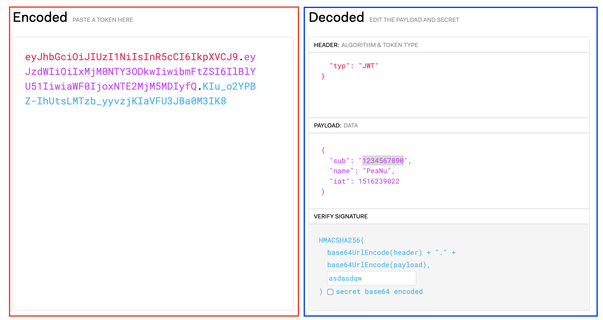

一樣回來填坑。
什麼是 JSON Web Token？
其實簡單來說就是：
用 JSON 格式的資料產生出的 Token
因為這東西經常應用在 Web 上，所以就簡稱為「JWT」了。我們可以先來看一個 JWT 長怎麼樣：

可以看到我分成兩個區塊，紅色區塊是「編碼和加密」後的結果，也就是實際 Token 的模樣；藍色的部分則是原始資料，是這個 Token 所富含的資訊，而且就是 JSON 的資料格式。
正如我所說，JWT 的背後就只是把 JSON 資料經過編碼和加密後再當成 Token 來用而已，不用想得太複雜。
JWT 的組成
再來看一次這張圖：
這次不要管框線，而是注意「文字顏色」的部分。
- 紅字亂碼會對應到右邊的 HEADER，是經過 base64 編碼前的模樣
- 紫字亂碼會對應到右邊的 PAYLOAD，是經過 base64 編碼前的模樣
- 淡藍字亂碼的部分則對應到右邊的 SIGNATURE，是經過加密前的模樣
附註：你可以試著把紅字亂碼（eyJhbGciOiJIUzI1NiIsInR5cCI6IkpXVCJ9）跟紫字亂碼（eyJzdWIiOiIxMjM0NTY3ODkwIiwibmFtZSI6IlBlYU51IiwiaWF0IjoxNTE2MjM5MDIyfQ）的部分拿去 這裡 做 base64 解碼，就會懂我的意思了。
淡藍字的部分比較特別所以我多補充一下，這個地方叫做「簽章」，是 JWT 最重要的部分。
簡單來說就是用下面這個公式來算出最後的 Token：
1 | HMACSHA256(base64UrlEncode(header) + '.' + base64UrlEncode(payload), secret) |
單看這段 code 應該就蠻清楚了，總之就是先經過 base64 編碼後在拼接起來做加密，所以最後的值才會是 header.payload.secret 這樣的格式。
至於 secret 的部分則是後端自己定義的一個值（可以是任何文字），總之重點就是絕對不能讓別人知道這個值是什麼，不然別人就可以偽造 JWT 了。
畢竟你看到現在會發現整個 JWT 真正有被加密的地方只有 secret 這一段而已，header 跟 payload 都只是純粹的 base64 編碼，只要拿去解碼就可以知道內容是什麼。
接下來介紹一下 Header、Payload、Secret 這三個 key 可以放些什麼內容。
Header
alg加密的演算法，可以是 HMAC、SHA256、RSAtypToken 的 type，大多數情況下只會填 JWT
範例：
1 | { |
Payload
簡單來說這邊是讓你「放一些訊息的地方」，術語上會稱作「聲明（Claim）」，但我覺得知道一下就好，就算記不得也沒關係。
這邊會列出幾個屬於「標準規範（Registered claims）」中的內容（意思就是建議你放，但不放也沒關係啦）
iss（Issuer）誰發的 JWTexp（Expiration Time）JWT 的過期時間sub（Subject）這個 JWT 的所有人（類似作者的概念吧）aud（Audience）預期誰會接收這個 JWTnbf（Not Before）JWT 的生效時間iat（Issued At）JWT 的建立日期jti（JWT Id）JWT 自身 的 ID（不可重複）
除了這些以外，你也可以定義自己的聲明（Private claims），像是 name、admin 之類的。
範例：
1 | { |
Secret
剛剛有說過，這部分就是讓後端自定義的字串，接著再跟編碼後的 header + payload 來組合後再拿去加密。
1 | HMACSHA256(base64UrlEncode(header) + '.' + base64UrlEncode(payload), secret) |
還是在強調一次，這個 secret 絕對不能洩漏出去，不然就沒有任何意義了。
JWT 怎麼用？
- 用使用者的帳號密碼打後端的 API，通過後就會拿到 JWT
- 前端把 JWT 的內容存在 localStorage
- 當前端要存取跟權限有關的資源時，加上底下的 request header
1 | Authorization: Bearer <JWT token> |
- 後端檢查該 JWT 是否有效，有效的話就給資源，否則就拒絕